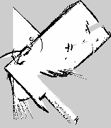

Generated on 2026-10-04T19:40:48+08:00
LLM analysis was not requested for this report.
LLM analysis was not available; deterministic logs remain embedded below.
Occupancy grid saved by this run, rendered at the map's own resolution.

| Generated On | 2026-10-04T19:40:48+08:00 |
|---|---|
| Test Report Generated On | 2026-10-04T19:17:16+08:00 |
| Run Id | 37197515154 |
| Workflow | Webots Integration Tests |
| Event | push |
| Repository | syswonder/robonix |
| Tested Commit | 1cdbcccdc3be |
| Tested Commit Subject | feat(rbnx): let a deployment entry be disabled with status: disabled |
| Tested Commit Author | Yulong Han <wheatfox17@icloud.com> |
| Tested Commit Date | 2026-10-01T17:01:07+08:00 |
| Triggered By | enkerewpo |
| Actor | enkerewpo |
| Triggering Actor | enkerewpo |
| Runner Name | robonix-runner-workpc-debian13-temp |
| Runner Os | Linux |
| Runner Arch | X64 |
| Origin Url | https://github.com/syswonder/robonix |
| Run Attempt | 1 |
| Ref | refs/heads/dev-ci-test |
| Sha | 1cdbcccdc3be |
| Report Id | 37197515154-cg |
| Scene Backend | concept_graphs |
| Test Ref | refs/heads/dev-ci-test |
| Hostname | dedsec-amd0 |
|---|---|
| Os Pretty Name | Debian GNU/Linux 13 (trixie) |
| Kernel | Linux 6.12.101+deb13-amd64 x86_64 GNU/Linux |
| Arch | x86_64 |
| Cpu Model | AMD Ryzen 5 7600X 6-Core Processor |
| Cpu Cores | 12 |
| Mem Total | 30Gi |
| Gpu Summary | 0, NVIDIA GeForce RTX 2060, 6144 MiB, 580.95.05 |
| Nvidia Driver | 580.95.05 |
| Cuda Version | 13.0 |
| Docker Version | 29.7.2 |
| Docker Compose Version | 5.4.0 |
| Webots Version | webots package 2025a |
| Ros Distro | humble |
| Ros Domain Id | 144 |
| Sim Container | ci-37197515154-sim |
| Sim Image | ci-37197515154-1-cg-sim |
| Webots Stream Port | 23154 |
| Webots Viewer Port | 24154 |
| Python Version | Python 3.13.5 |
| Rustc Version | rustc 1.95.0 (59807616e 2026-04-14) |
| Rbnx Version | rbnx 1.1.0-beta.1 |
| Status | Suite | Scenario | Rounds | Dispatched contracts | Failures | Log |
|---|---|---|---|---|---|---|
| FAIL | flow | object_navigation | 9 | {'args_json': '{"area_hint":"ci local room","max_speed_m_s":0.1,"timeout_s":8.0}', 'call_id': '32c2-2:0', 'contract_id': 'robonix/skill/explore/explore', 'provider_id': 'explore'} {'args_json': '{}', 'call_id': '32c2-3:0', 'contract_id': 'robonix/system/scene/list_objects', 'provider_id': 'scene'} {'args_json': '{"object_id":"scene.object.0002"}', 'call_id': '32c2-6:0', 'contract_id': 'robonix/system/scene/goal_near', 'provider_id': 'scene'} {'args_json': '{"goal":{"header":{"frame_id":"map","stamp":{"nanosec":0,"sec":0}},"pose":{"orientation":{"w":0.9206583397194767,"x":0.0,"y":0.0,"z":0.39036933986287464},"position":{"x":1.0270000128404946,"y":-0.25509596529847167,"z":0.0}}}}', 'call_id': '32c2-7:0', 'contract_id': 'robonix/service/navigation/navigate', 'provider_id': 'nav2'} {'args_json': '{"goal":{"header":{"frame_id":"map","stamp":{"nanosec":0,"sec":0}},"pose":{"orientation":{"w":0.9206583397194767,"x":0.0,"y":0.0,"z":0.39036933986287464},"position":{"x":1.0270000128404946,"y":-0.25509596529847167,"z":0.0}}}}', 'call_id': '32c2-10:0', 'contract_id': 'robonix/service/navigation/navigate', 'provider_id': 'nav2'} {'args_json': '{"goal":{"header":{"frame_id":"map","stamp":{"nanosec":0,"sec":0}},"pose":{"orientation":{"w":0.9206583397194767,"x":0.0,"y":0.0,"z":0.39036933986287464},"position":{"x":1.0270000128404946,"y":-0.25509596529847167,"z":0.0}}}}', 'call_id': '32c2-13:0', 'contract_id': 'robonix/service/navigation/navigate', 'provider_id': 'nav2'} {'args_json': '{"goal":{"header":{"frame_id":"map","stamp":{"nanosec":0,"sec":0}},"pose":{"orientation":{"w":0.9206583397194767,"x":0.0,"y":0.0,"z":0.39036933986287464},"position":{"x":1.0270000128404946,"y":-0.25509596529847167,"z":0.0}}}}', 'call_id': '32c2-16:0', 'contract_id': 'robonix/service/navigation/navigate', 'provider_id': 'nav2'} {'args_json': '{"goal":{"header":{"frame_id":"map","stamp":{"nanosec":0,"sec":0}},"pose":{"orientation":{"w":0.9206583397194767,"x":0.0,"y":0.0,"z":0.39036933986287464},"position":{"x":1.0270000128404946,"y":-0.25509596529847167,"z":0.0}}}}', 'call_id': '32c2-19:0', 'contract_id': 'robonix/service/navigation/navigate', 'provider_id': 'nav2'} {'args_json': '{"goal":{"header":{"frame_id":"map","stamp":{"nanosec":0,"sec":0}},"pose":{"orientation":{"w":0.9206583397194767,"x":0.0,"y":0.0,"z":0.39036933986287464},"position":{"x":1.0270000128404946,"y":-0.25509596529847167,"z":0.0}}}}', 'call_id': '32c2-22:0', 'contract_id': 'robonix/service/navigation/navigate', 'provider_id': 'nav2'} | timeout after 300s before timeout: rbnx ask exit=124 before timeout: steps[3] did not match any plan round from 3; expected contracts=['robonix/service/navigation/navigate']; observed round 3: calls=[('robonix/service/navigation/navigate', '32c2-7:0')]; rtdl.children[0]: expected leaf contract='robonix/service/navigation/navigate' success=True, observed [('robonix/service/navigation/navigate', False)] | round 4: calls=[('robonix/service/navigation/navigate', '32c2-10:0')]; rtdl.children[0]: expected leaf contract='robonix/service/navigation/navigate' success=True, observed [('robonix/service/navigation/navigate', False)] | round 5: calls=[('robonix/service/navigation/navigate', '32c2-13:0')]; rtdl.children[0]: expected leaf contract='robonix/service/navigation/navigate' success=True, observed [('robonix/service/navigation/navigate', False)] before timeout: unexpected leaf failure robonix/service/navigation/navigate: aborted; distance_remaining=0.000m recoveries=22 last_pose=(1.715,-0.542); nav2=[planner_server-3] [WARN] [1791112329.423627185] [planner_server]: GridBased: fa before timeout: unexpected leaf failure robonix/service/navigation/navigate: aborted; distance_remaining=0.000m recoveries=22 last_pose=(1.723,-0.547); nav2=[planner_server-3] [WARN] [1791112363.448170541] [planner_server]: GridBased: fa before timeout: unexpected leaf failure robonix/service/navigation/navigate: aborted; distance_remaining=0.000m recoveries=22 last_pose=(1.728,-0.548); nav2=[planner_server-3] [WARN] [1791112399.321220551] [planner_server]: GridBased: fa before timeout: unexpected leaf failure robonix/service/navigation/navigate: aborted; distance_remaining=0.000m recoveries=22 last_pose=(1.755,-0.549); nav2=[planner_server-3] [WARN] [1791112434.462352493] [planner_server]: GridBased: fa before timeout: unexpected leaf failure robonix/service/navigation/navigate: aborted; distance_remaining=0.000m recoveries=22 last_pose=(1.783,-0.546); nav2=[planner_server-3] [WARN] [1791112469.456525015] [planner_server]: GridBased: fa | |
| PASS | builtin | fault_recovery_builtin | 3 | robonix/system/executor/builtin/read_file robonix/system/executor/builtin/write_file | - | |
| PASS | builtin | file_roundtrip | 1 | robonix/system/executor/builtin/list_dir robonix/system/executor/builtin/read_file robonix/system/executor/builtin/write_file | - | |
| PASS | builtin | run_command | 1 | robonix/system/executor/builtin/run_command | - | |
| PASS | cap | camera_snapshot | 1 | robonix/primitive/camera/snapshot | - | |
| PASS | cap | explore_smoke | 2 | robonix/skill/explore/explore robonix/skill/explore/explore/cancel robonix/skill/explore/explore/status | - | |
| PASS | cap | lidar_snapshot | 1 | robonix/primitive/lidar/snapshot | - | |
| PASS | cap | mapping_save | 1 | robonix/service/map/save_map | - | |
| PASS | cap | memgraph_failure_lesson | 1 | robonix/service/memory/hybrid_search robonix/service/memory/remember | - | |
| PASS | cap | memgraph_roundtrip | 3 | robonix/service/memory/hybrid_search robonix/service/memory/promote robonix/service/memory/remember | - | |
| PASS | cap | memory_roundtrip | 1 | robonix/service/memory/save robonix/service/memory/search | - | |
| PASS | cap | scene_object_fixture | 1 | robonix/system/scene/list_objects | - | |
| PASS | cap | speech_speak | 1 | robonix/service/speech/speak | - | |
| PASS | cap | voiceprint_list | 1 | robonix/service/voiceprint/list | - | |
| PASS | flow | fault_recovery | 2 | robonix/service/memory/save | - | |
| PASS | flow | patrol_observe | 3 | robonix/primitive/camera/snapshot robonix/primitive/lidar/snapshot robonix/service/memory/save robonix/service/memory/search | - |
Each scenario step is one VLM planning round. The tree below is the RTDL returned for that round; every do leaf has its own expected runtime contract and output checks.
Build stdout is embedded as sim_logs/build-webots-deployment.log when the build step starts. The deploy supervisor output with the Robonix boot banner is embedded as rbnx-boot.log.
No log selected.Contracts observed by the scenario runner in executor leaf results. This shows which runtime contract ids were exercised by this run; it is not a full API inventory.
| Area | Contract id |
|---|---|
| robonix/primitive/camera | robonix/primitive/camera/snapshot |
| robonix/primitive/lidar | robonix/primitive/lidar/snapshot |
| robonix/service/map | robonix/service/map/save_map |
| robonix/service/memory | robonix/service/memory/hybrid_search |
| robonix/service/memory | robonix/service/memory/promote |
| robonix/service/memory | robonix/service/memory/remember |
| robonix/service/memory | robonix/service/memory/save |
| robonix/service/memory | robonix/service/memory/search |
| robonix/service/speech | robonix/service/speech/speak |
| robonix/service/voiceprint | robonix/service/voiceprint/list |
| robonix/skill/explore | robonix/skill/explore/explore |
| robonix/skill/explore | robonix/skill/explore/explore/cancel |
| robonix/skill/explore | robonix/skill/explore/explore/status |
| robonix/system/executor | robonix/system/executor/builtin/list_dir |
| robonix/system/executor | robonix/system/executor/builtin/read_file |
| robonix/system/executor | robonix/system/executor/builtin/run_command |
| robonix/system/executor | robonix/system/executor/builtin/write_file |
| robonix/system/scene | robonix/system/scene/list_objects |